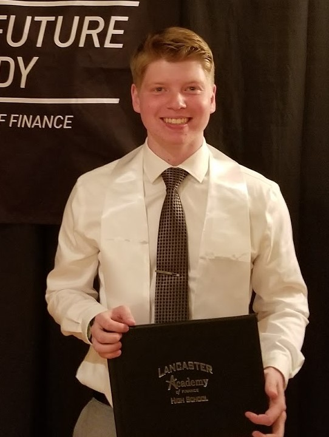

Nicholas J. Doering
My name is Nicholas Doering, I am currently a first year engineering student at RIT. My major is Electrical Engineering with a computer focus. I picked this major because of my love of electronics and my desire to understand how they function and hope that one day, I would be able to make them myself.
This website was created by me to showcase my experience with HTML website creation as well as to create a place to put information about myself, including my personal and professional interests as well as an online version of my Resume.
Resume
Nicholas J. Doering
Work Experience:
Federal Meats (September 2015-August 2017)
8760 Main St., Williamsville NY, 14221)
Cleaned the store (swept, mopped and washed the dishes and counters)
Waited on customers (Got them their groceries and cashed them out)
Lancaster Central High School (October 2016-May 2017)
1 Forton Drive, Lancaster NY, 14086
Assisted teachers and students with technical based problems
Developed and presented supplemental information on Google programs to faculty
Volunteer Experience:
Town of Lancaster Parks and Recreation Department
Designed, built and installed bluebird houses along the Heritage Trail in Lancaster NY.
Buffalo City Mission
Annually baked and donated Thanksgiving pies to the Buffalo City Mission through Boy Scout Troop 601
Awards/Achievements
Eagle Scout Award - 2017
Graduate of Lancaster High School - 2017
Recipient of the RIT Presidential Scholarship - 2017
Download a pdf of my Resume here
Download a Microsoft Word Document of my Resume here